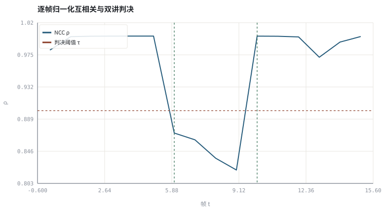
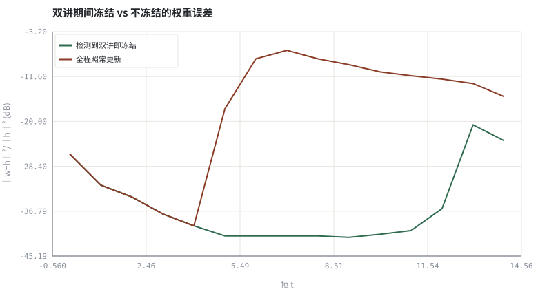

第 07 章双讲检测、时延漂移与路径突变
自适应滤波器最怕的三件事：标签被污染、延迟在走、真值突然换了。
本章位置：第 06 章 · 频域自适应滤波：FDAF、分块 MDF 与收敛 让滤波器在频域收敛，本章保护它不被带跑；第 09 章 · AEC 总体结构：参考信号、线性滤波与残余抑制 把检测与线性滤波装进 AEC 总体结构，第 11 章 · 残余回声抑制与 WebRTC AEC3 结构 用 AEC3 结构收口。
双讲检测是给在线训练加一个 if label_is_clean: 守卫；时延漂移是数据管道的两个时钟域没做 CDC；路径突变则是训练集分布突然换了。三者都不是『调小学习率』能解决的。
- 能说明双讲为何让 NLMS 的梯度混入不相关近端语音。
- 能用归一化互相关构造双讲检测量并给出帧级检测率与虚警率。
- 能解释时钟漂移与路径突变对已收敛滤波器的不同破坏方式。
- 能运行实验，对照冻结与不冻结更新时的权重误差与可听残差。
§知识点地图
每个知识点都配了 1～2 个扩展学习链接；本章完整资源清单见 扩展学习。
| # | 知识点 | 扩展学习 | 状态 |
|---|---|---|---|
| 1 | 双讲与近端语音 | ITU-T G.168 ↗ · Microsoft AEC Challenge ↗ | 正文已覆盖 |
| 2 | Geigel / NCC 检测量 | ITU-T G.168 ↗ · Microsoft AEC Challenge ↗ | 正文已覆盖 |
| 3 | 检测阈值与驻留时间 | ITU-T G.168 ↗ · Microsoft AEC Challenge ↗ | 正文已覆盖 |
| 4 | 系数冻结与阴影滤波器 | ITU-T G.168 ↗ · Microsoft AEC Challenge ↗ | 正文已覆盖 |
| 5 | 时延漂移 ppm | ITU-T G.168 ↗ · Microsoft AEC Challenge ↗ | 正文已覆盖 |
| 6 | 互相关峰值跟踪 | ITU-T G.168 ↗ · Microsoft AEC Challenge ↗ | 正文已覆盖 |
| 7 | 路径突变与重收敛 | Least mean squares filter ↗ · NumPy 文档 ↗ | 正文已覆盖 |
| 8 | 检测率与虚警率 | ITU-T G.168 ↗ · Microsoft AEC Challenge ↗ | 正文已覆盖 |
§7.1双讲不是噪声变大，是标签被污染
e[n] = d[n] + h*x[n] + v[n] − ŷ[n] ；单讲时 d[n]≈0，双讲时 d[n] 与 x[n] 不相关
NLMS 把 e[n] 当成『回声没抵消干净的部分』去修正 w。双讲时 e[n] 里主要是近端语音，它与参考 x[n] 统计独立，于是梯度 e·x 变成零均值大方差噪声：系数被推离 h，双讲结束后 ERLE 塌陷，需要几十到几百毫秒重收敛。
| 场景 | 误差 e[n] 主要成分 | 与 x 相关吗 | 该不该更新 w |
|---|---|---|---|
| 远端单讲 | h−ŵ 造成的残余回声 | 强相关 | 更新（正是要学的时候） |
| 近端单讲 | 近端语音 + 噪声 | 不相关 | 冻结 |
| 双讲 | 残余回声 + 近端语音 | 混合 | 冻结或大幅降 μ |
| 双方静音 | 量化 / 环境噪声 | 不相关 | 冻结（输入能量不足） |
WebRTC AEC3 用『主滤波器 + 阴影滤波器』：阴影滤波器一直自由更新，只有明显优于主滤波器时才替换，避免一次误判毁掉已收敛的 h。本章实验用理想检测上界演示冻结的作用。
§7.2一个可用的检测量：归一化互相关
ρ = Σ ŷ[i]·y[i] / √(Σ ŷ[i]² · Σ y[i]²) ，逐帧计算；ρ < τ 判双讲
ŷ 是线性滤波器预测的回声。单讲时 y ≈ ŷ，ρ 接近 1；双讲时 y = ŷ + d，分母多出近端能量而分子几乎不变，ρ 明显下降。阈值 τ 决定检测率与虚警率的折中；工程上还要加驻留时间（hangover），避免音节间隙把一次双讲切成几十段。
若近端与预测回声功率比为 q，则 ρ ≈ 1 / √(1+q) （可手算校核阈值）
本实验 q≈1.5 时 ρ≈0.63，取 τ=0.80 即可把双讲帧与单讲帧干净分开；把近端调小到 q≈0.2，ρ≈0.91 就会漏检——阈值必须跟着电平标定。
§7.3另外两种『路径变了』
- 时延漂移：播放与采集用不同晶振，ppm 级采样率偏差让缓冲对齐缓慢滑移；表现为互相关峰值逐帧平移，而不是 h 的形状改变。对策是周期性重估延迟 + 重采样 / 缓冲对齐。
- 路径突变：有人挪动笔记本、手掌挡住麦克风，h 在几十毫秒内整体改变；表现为 ‖w−h‖ 突然跳大、ERLE 断崖。对策是突变检测后提高 μ 或重置阴影滤波器。
- 非线性失真：扬声器削波让回声不再是 x 的线性卷积，线性滤波器无解，只能交给 第 11 章 · 残余回声抑制与 WebRTC AEC3 结构 的残余抑制。
§Python 实验
实验 7-1 · NCC 双讲检测、冻结更新与互相关时延跟踪
#!/usr/bin/env python3
# -*- coding: utf-8 -*-
"""逐帧计算归一化互相关做双讲判决，对照冻结/不冻结的权重误差，并用互相关峰值估计时延漂移。
全部语音 / 噪声 / 房间冲激响应均为代码合成信号，仅用于教学演示机制与量级。
"""
from __future__ import annotations
import math
import pathlib
import random
import statistics
import sys
import time
_here = pathlib.Path(__file__).resolve()
for _p in _here.parents:
if (_p / "tools" / "dsp.py").exists():
sys.path.insert(0, str(_p / "tools"))
break
from dsp import (SAMPLE_RATE, fft, hann, stft, istft, magnitude_db, spectrum,
white_noise, tone, chirp, synthetic_speech, rir, convolve,
fft_convolve, delay, clip, normalize_peak, rms, rolling_rms,
smooth, db, energy_db, snr_db, erle_db, seg_snr_db,
scale_align, si_sdr_db, lufs_approx,
write_wav, read_wav, wav_info)
from chart import Chart, heatmap, BLUE, RED, GREEN, AMBER
FIG = _here.parents[1] / "fig"
AUDIO = _here.parents[1] / "audio"
FIG.mkdir(exist_ok=True)
AUDIO.mkdir(exist_ok=True)
random.seed(7)
# ---- 参数区 ----
N, L, FRAME = 4096, 64, 256
DT0, DT1 = 1536, 2560 # 双讲区间（样本）
THRESH = 0.90 # NCC 双讲阈值（实测单讲 ρ≈1、双讲 ρ≈0.82~0.87）
NEAR_GAIN = 1.8 # 近端语音电平
MU = 0.50 # NLMS 步长
DRIFT = 8 # 模拟时延漂移（样本）
# ---- 计算与作图 ----
rng = random.Random(7)
far = synthetic_speech(rng, N)
near_raw = synthetic_speech(rng, N)
near = [NEAR_GAIN * near_raw[i] if DT0 <= i < DT1 else 0.0 for i in range(N)]
h = rir(rng, L, decay=0.004, direct_delay=12)
echo = fft_convolve(far, h)[:N]
noise = white_noise(rng, N, 0.003)
mic = [echo[i] + near[i] + noise[i] for i in range(N)]
echo_hat = fft_convolve(far, h)[:N]
NFR = N // FRAME
rho, flags, truth = [], [], []
for f in range(NFR):
s = f * FRAME
num = sum(echo_hat[s + i] * mic[s + i] for i in range(FRAME))
da = math.sqrt(sum(echo_hat[s + i] ** 2 for i in range(FRAME)))
db = math.sqrt(sum(mic[s + i] ** 2 for i in range(FRAME)))
r = num / (da * db + 1e-12)
rho.append(r)
flags.append(r < THRESH)
truth.append(DT0 <= s < DT1)
tp = sum(1 for a, b in zip(flags, truth) if a and b)
fp = sum(1 for a, b in zip(flags, truth) if a and not b)
fn = sum(1 for a, b in zip(flags, truth) if not a and b)
tn = sum(1 for a, b in zip(flags, truth) if not a and not b)
w_frozen, w_free = h[:], h[:]
out_frozen, out_free = [0.0] * N, [0.0] * N
curve_frozen, curve_free = [], []
den_h = sum(v * v for v in h)
for n in range(L, N):
xv = [far[n - i] for i in range(L)]
f = min(n // FRAME, NFR - 1)
is_dt = flags[f]
y_f = sum(w_frozen[i] * xv[i] for i in range(L))
y_u = sum(w_free[i] * xv[i] for i in range(L))
e_f, e_u = mic[n] - y_f, mic[n] - y_u
out_frozen[n], out_free[n] = e_f, e_u
p = sum(v * v for v in xv) + 1e-3
for i in range(L):
w_free[i] += MU * e_u * xv[i] / p
if not is_dt:
w_frozen[i] += MU * e_f * xv[i] / p
if n % FRAME == 0:
curve_frozen.append(10 * math.log10(
sum((w_frozen[i] - h[i]) ** 2 for i in range(L)) / (den_h + 1e-12) + 1e-12))
curve_free.append(10 * math.log10(
sum((w_free[i] - h[i]) ** 2 for i in range(L)) / (den_h + 1e-12) + 1e-12))
probe = white_noise(rng, 2048, 0.35)
h_a = rir(rng, 64, decay=0.004, direct_delay=12)
h_b = rir(rng, 64, decay=0.004, direct_delay=12 + DRIFT)
ya, yb = fft_convolve(probe, h_a)[:2048], fft_convolve(probe, h_b)[:2048]
def peak_lag(y):
best, bp = -1.0, 0
for lag in range(60):
num = sum(probe[i] * y[i + lag] for i in range(1024))
da = math.sqrt(sum(probe[i] ** 2 for i in range(1024)))
db = math.sqrt(sum(y[i + lag] ** 2 for i in range(1024)))
r = num / (da * db + 1e-12)
if r > best:
best, bp = r, lag
return bp, best
la, pa = peak_lag(ya)
lb, pb = peak_lag(yb)
jump = sum((h_b[i] - h_a[i]) ** 2 for i in range(64)) / (sum(v * v for v in h_a) + 1e-12)
c = Chart(FIG / "07-ncc.svg", "逐帧归一化互相关与双讲判决", xlabel="帧 t", ylabel="ρ")
c.line(range(NFR), rho, BLUE, label="NCC ρ")
c.hline(THRESH, RED, label="判决阈值 τ")
c.vline(DT0 // FRAME, GREEN, label="双讲起")
c.vline(DT1 // FRAME, GREEN, label="双讲止")
print("检测图:", c.save())
d = Chart(FIG / "07-weight-error.svg", "双讲期间冻结 vs 不冻结的权重误差",
xlabel="帧 t", ylabel="‖w−h‖²/‖h‖² (dB)")
d.line(range(len(curve_frozen)), curve_frozen, GREEN, label="检测到双讲即冻结")
d.line(range(len(curve_free)), curve_free, RED, label="全程照常更新")
print("权重图:", d.save())
write_wav(AUDIO / "07-mic.wav", normalize_peak(mic))
write_wav(AUDIO / "07-frozen.wav", normalize_peak(out_frozen))
write_wav(AUDIO / "07-unfrozen.wav", normalize_peak(out_free))
print("采样率=%d Hz 帧数=%d 帧长=%d 阈值=%.2f 双讲区间=[%d,%d)" %
(SAMPLE_RATE, NFR, FRAME, THRESH, DT0, DT1))
print("双讲检测 TP=%d FP=%d FN=%d TN=%d | 检测率=%.3f 虚警率=%.3f 帧准确率=%.3f" %
(tp, fp, fn, tn, tp / max(tp + fn, 1), fp / max(fp + tn, 1), (tp + tn) / NFR))
print("互相关峰值 lag 原=%d 漂移后=%d 估计漂移=%d 真值=%d 峰值ρ=%.3f" % (la, lb, lb - la, DRIFT, pb))
print("末帧权重误差 冻结=%.2f dB 不冻结=%.2f dB | 路径突变 ‖h_b−h_a‖²/‖h_a‖²=%.3f" %
(curve_frozen[-1], curve_free[-1], jump))操作：先看 ρ 曲线在双讲区间是否跌破阈值；再对照两条权重误差曲线与两个残差 WAV；把 NEAR_GAIN 调到 0.4 观察漏检。 预期与判读：单讲帧 ρ 接近 1、双讲帧降到 0.82～0.87，阈值 0.90 可把 4 个双讲帧全部检出且零虚警；冻结曲线在双讲后回到约 −24 dB，不冻结曲线停在约 −15 dB。检测率与虚警率可由 TP/FP/FN/TN 逐项复算。
改参数看趋势：把 THRESH 调到 0.95 会提高检测率但增大虚警；把 DRIFT 改成 16，互相关估计漂移应同步翻倍。 文件位置：part1/07-doubletalk/code/07-doubletalk.py


07-mic.wav
含双讲段的麦克风信号（16 kHz / 16-bit 单声道，代码合成信号，不是真实录音）
07-frozen.wav
双讲期间冻结系数后的残差（16 kHz / 16-bit 单声道，代码合成信号，不是真实录音）
07-unfrozen.wav
双讲期间照常更新的残差（16 kHz / 16-bit 单声道，代码合成信号，不是真实录音）
代码块右上角可一键复制；仓库里的 code/*.py 由 tools/extract_code.py 从这些代码块自动抽取。脚本只用标准库、固定 random.seed(7)，运行后写出 fig/*.svg 与 audio/*.wav；批量运行用 ./tools/run_python.sh。
§可选真机命令片段
以下命令不参与批量运行，需要本机自行安装对应工具。滤镜是否可用取决于本机 ffmpeg 版本与编译选项，请先用 ffmpeg -filters / ffmpeg -version 自查，并以 https://ffmpeg.org/ffmpeg-filters.html 与各自官方文档为准；本书不假定任何特定版本具备某项能力。
本机自查回声/双讲测试素材与 G.168 官方入口
ffmpeg -hide_banner -filters | grep -E 'aecho|silencedetect|astats'说明：只做本机滤镜能力自查；双讲与 ERLE 的测试信号口径以 ITU-T G.168 https://www.itu.int/rec/T-REC-G.168/en 为准，滤镜可用性以 https://ffmpeg.org/ffmpeg-filters.html 与本机输出为准，本书不假定任何特定版本。
§本章参考资料
按本章知识点挑选的精读资料；更多检索入口见 扩展学习。
§相关开源工程
下列工程仅作技术参照，版权与许可证归各自维护者所有。本书实验不依赖它们，也与之无从属关系。
§常见误区
- 用近端能量绝对值做判决，电平一变就整片误检。
- 双讲结束后立刻恢复更新，残留尾音仍会把系数推偏。
- 把时延漂移当成 h 变化而重置滤波器，付出无谓的重收敛代价。
- 只在单讲数据上调阈值，双讲检测率报出来虚高。
§习题与思考
- 由 ρ ≈ 1/√(1+q) 推导 q=1.5 时的 ρ，并给出 τ=0.80 的可检测 q 下限。
- 解释主/阴影滤波器为何能降低一次误判的代价。
- 设计一组覆盖 ppm 级时钟漂移与手掌遮挡的测试序列。
§扩展学习
继续检索
- Google Scholar：double talk detection nonlinear echo delay drift ↗
- arXiv：double talk detection nonlinear echo delay drift ↗
- GitHub：double talk detection nonlinear echo delay drift ↗
全书链接总表见 FFmpeg Filters 文档 ↗ 与 附录 A.7；滤镜是否可用请以本机 ffmpeg -filters 为准。
§延伸阅读与内链
- 第 09 章 · AEC 总体结构：参考信号、线性滤波与残余抑制 AEC 总体结构中的双讲逻辑；第 11 章 · 残余回声抑制与 WebRTC AEC3 结构 AEC3 的残余回声估计；第 27 章 · 因果性与流式推理：状态缓存、感受野 流式状态下的因果约束。